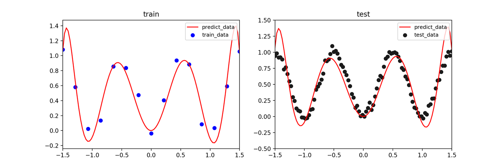
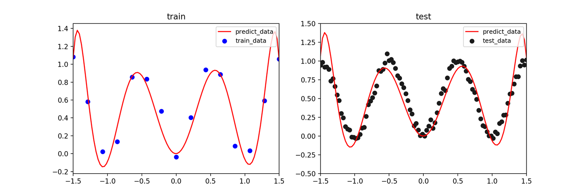
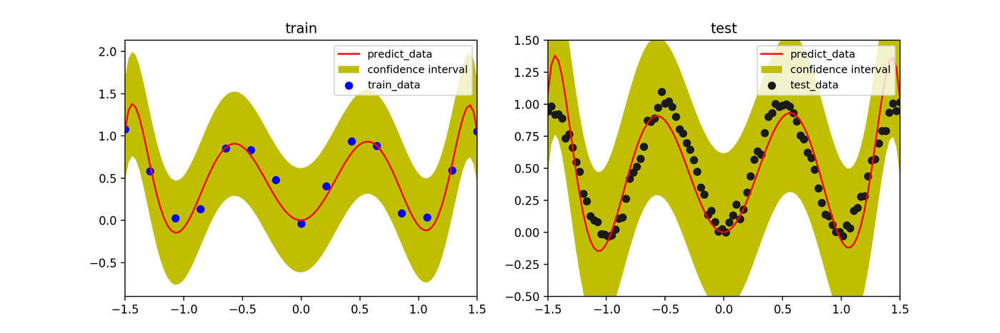
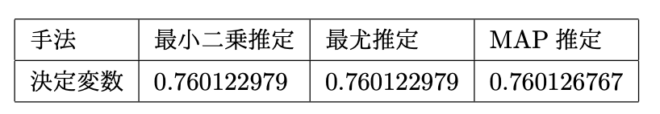
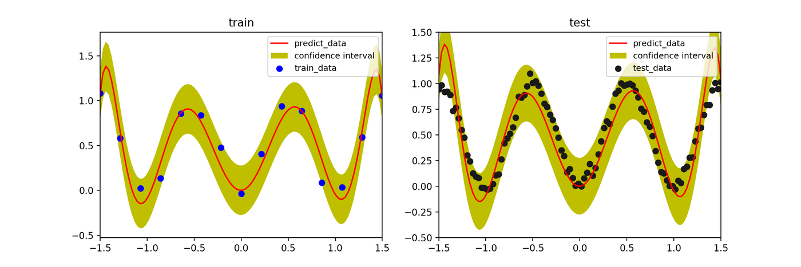
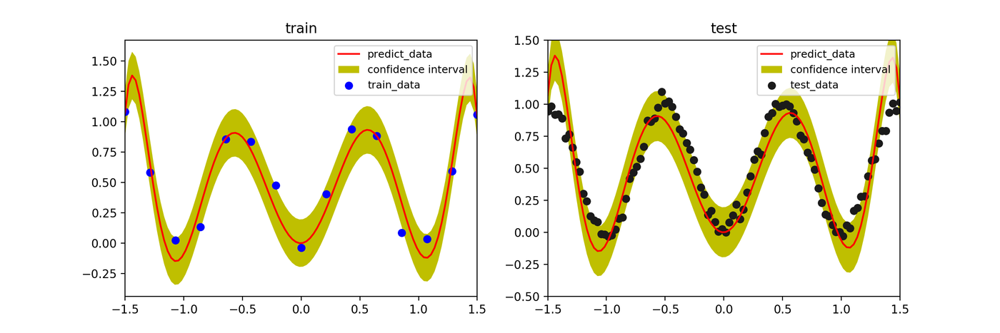
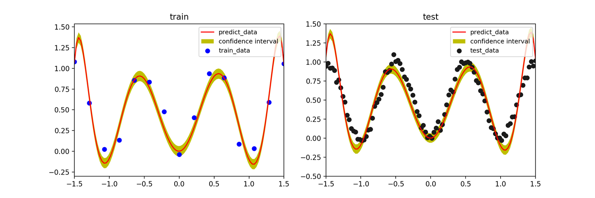

ベイズ線形回帰の基礎：最小二乗法からベイズ推定まで
はじめに
回帰問題は、入力データとそれに対応する出力データの関係を学習し、未知の入力に対する出力を予測するタスクです。本記事では、最も基本的な回帰モデルである線形回帰を題材に、パラメータの推定方法として代表的な最小二乗法、最尤推定、MAP推定、そしてベイズ推定を比較し、その違いと特徴を解説します。
モデルとして、入力 $x$ の非線形関数である基底関数 $\phi(x)$ の線形結合を考えます。$w$ をモデルのパラメータ（重み）、$\epsilon$ を誤差とすると、モデルは以下のように表せます。
$$ y = \Phi w + \epsilon $$
ここで、$\Phi$ は計画行列と呼ばれ、各データ点の基底関数ベクトルを並べたものです。
1. 最小二乗法 (Least Squares Estimation)
最小二乗法は、モデルの予測値と実際の目標値との誤差の二乗和 $S(w)$ を最小化するパラメータ $\hat{w}$ を見つける手法です。
$$ S(w) = (y - \Phi w)^T (y - \Phi w) $$
$S(w)$ を $w$ で微分してゼロとおくことで、以下の解が得られます。
$$ \hat{w}_{LS} = (\Phi^T \Phi)^{-1} \Phi^T y $$
これは解析的に解けるため、計算が非常に高速です。しかし、訓練データ数が少ない場合や、モデルの自由度が高い場合に**過学習（オーバーフィッティング）**を起こしやすいという欠点があります。
2. 最尤推定 (Maximum Likelihood Estimation)
最尤推定は、観測データが得られる確率（尤度）を最大化するパラメータ $\hat{w}$ を見つける手法です。
ここで、誤差項 $\epsilon$ が平均 $0$、分散 $\sigma^2$ のガウス分布に従うと仮定します。すると、目標値 $y$ の条件付き確率は、平均 $\Phi w$、分散 $\sigma^2$ のガウス分布となります。
$$ p(y | w, \sigma^2) = \mathcal{N}(y | \Phi w, \sigma^2 I) = \frac{1}{(2\pi\sigma^2)^{N/2}} \exp\left{-\frac{1}{2\sigma^2}(y-\Phi w)^T(y-\Phi w)\right} $$
この尤度の対数をとった対数尤度を最大化します。
$$ \ln p(y|w) = -\frac{N}{2}\ln(2\pi\sigma^2) - \frac{1}{2\sigma^2}(y-\Phi w)^T(y-\Phi w) $$
対数尤度を最大化することは、右辺第二項の二乗誤差項を最小化することと等価です。したがって、誤差にガウス分布を仮定した場合、最尤推定は最小二乗法と等価な解を与えます。
$$ \hat{w}_{ML} = (\Phi^T\Phi)^{-1}\Phi^{T}y $$
3. MAP推定 (Maximum A Posteriori Estimation)
MAP推定は、過学習を抑制するための一般的な枠組みです。パラメータ $w$ 自身も確率変数であると考え、その事前分布 $p(w)$ を導入します。ベイズの定理を用いて、データが観測された後での $w$ の事後分布 $p(w|y)$ を考え、この事後確率が最大となる $\hat{w}$ を求めます。
$$ p(w|y) = \frac{p(y|w)p(w)}{p(y)} \propto p(y|w)p(w) $$
$w$ の事前分布として、平均 $0$、共分散 $\alpha^{-1}I$ のガウス分布を仮定します。これは「$w$ の各要素は0に近い値をとるだろう」という事前知識をモデルに与えることに相当し、大きな値をとる重みにペナルティを課す正則化として機能します。
$$ p(w|\alpha) = \mathcal{N}(w|0, \alpha^{-1}I) $$
このとき、事後分布を最大化する $\hat{w}_{MAP}$ は、以下のようになります。
$$ \hat{w}_{MAP} = (\Phi^T\Phi + \frac{\beta}{\alpha}I)^{-1}\Phi^{T}y $$
ここで、$\beta = 1/\sigma^2$ です。この解は、リッジ回帰（L2正則化付き最小二乗法） と呼ばれる手法と同じ形をしており、正則化項 $\frac{\beta}{\alpha}I$ のおかげで、$\Phi^T\Phi$ が正則でない（逆行列を持たない）場合でも安定して解を求めることができ、過学習を抑制します。
4. ベイズ推定 (Bayesian Estimation)
最小二乗法、最尤推定、MAP推定は、いずれも最適なパラメータ $w$ を一つの値（点推定）として求めました。しかし、このアプローチでは「パラメータがどのくらい確からしいか」という不確実性を表現できません。
ベイズ推定では、$w$ を点として求めるのではなく、事後分布 $p(w|y)$ そのものを求めます。この分布は、データを見た後での、あり得る全ての $w$ の値に対する確率分布を表します。
MAP推定で用いた事前分布と尤度（どちらもガウス分布）を用いると、事後分布もまたガウス分布になることが知られています（共役性）。
$$ p(w|y) = \mathcal{N}(w | \mu_N, \Sigma_N) $$
ここで、事後分布の平均 $\mu_N$ と共分散 $\Sigma_N$ は以下で与えられます。
$$ \mu_N = (\Phi^T\Phi + \frac{\beta}{\alpha}I)^{-1}\Phi^{T}y $$ $$ \Sigma_N = (\beta\Phi^T\Phi + \alpha I)^{-1} $$
新しい入力 $x_*$ に対する予測を行うには、あり得る全ての $w$ で予測を行い、それを事後確率で重み付けして平均します。これを予測分布と呼びます。
$$ p(y_* | x_, y) = \int p(y_ | x_*, w) p(w|y) dw $$
この予測分布は、予測の平均値だけでなく、その予測がどの程度不確かであるかを示す**分散（信頼区間）**も与えてくれます。
実験結果
- データ: $y = \sin(2\pi x)$ からノイズを加えて生成した15点の訓練データ
- 基底関数: 9次の多項式 ($f_j(x) = x^j, j=0, …, 9$)
- ハイパーパラメータ: $\alpha=1.0, \beta=10.0$
最小二乗推定 / 最尤推定
訓練データに強く適合しようとするため、データのない領域で予測が大きく振動し、過学習を起こしています。 
MAP推定
事前分布（正則化）の効果により、過学習が抑制され、より滑らかな予測曲線が得られています。 
ベイズ推定
MAP推定と同様に滑らかな予測（平均値、実線）が得られると同時に、訓練データが少ない領域では予測の不確実性が増大し、信頼区間（青い影の領域）が広がっていることがわかります。 
モデルの評価（決定係数 $R^2$）
決定係数は、モデルの当てはまりの良さを示す指標（1に近いほど良い）です。MAP推定とベイズ推定（の平均）が、最小二乗法よりも高いスコアを示しています。 
ハイパーパラメータ $\beta$ の影響
ベイズ推定において、尤度の精度パラメータ $\beta$（ノイズの逆分散）を大きくすると、モデルは訓練データにより強く適合しようとします。値を大きくしすぎると、信頼区間が狭まり、過学習に近づいていく様子がわかります。
- $\beta=50$ 
- $\beta=100$ 
- $\beta=1000$ 
まとめ
- 最小二乗法・最尤推定: シンプルで高速だが、過学習しやすい。
- MAP推定: 事前分布（正則化）を導入することで、過学習を抑制できる。
- ベイズ推定: パラメータの不確実性を考慮し、予測の信頼区間を得ることができる。データが少ない領域で不確実性が増大するなど、よりリッチな情報を提供してくれる。
参考文献
- C.M. ビショップ, 『パターン認識と機械学習 上』, 丸善出版 (2012)
- 須山 敦志, 『ベイズ推論による機械学習入門』, 講談社 (2017)